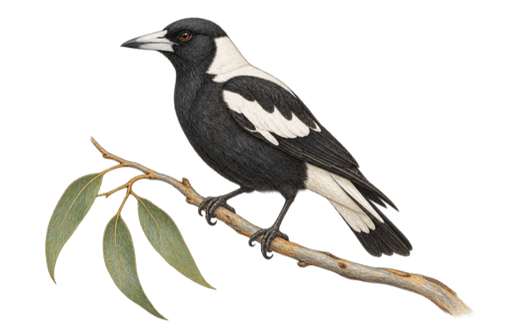
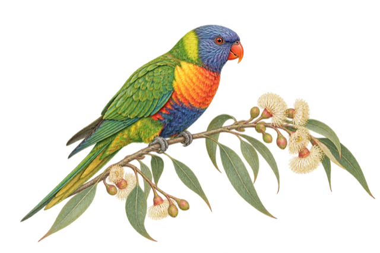
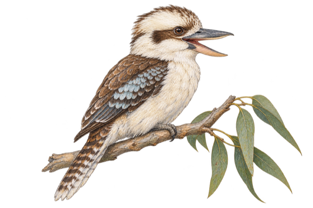
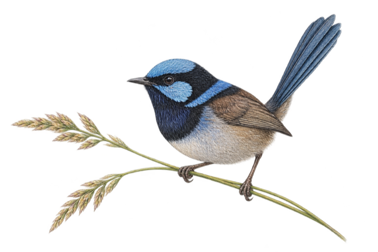

Where do citizen scientists record birds?
Circle area represents the number of citizen-science records in each state or territory. Records indicate observation activity, not bird abundance.
Australian birdwatching · citizen science
Where people observe, which birds they report, how activity changes through the seasons, and how community participation supports wildlife research.
Observation footprint
Citizen-science observations build a shared picture of Australia, but record totals describe reporting activity rather than bird abundance.

Circle area represents the number of citizen-science records in each state or territory. Records indicate observation activity, not bird abundance.
eBird records grew strongly, while Birdata remained around one million records per year. Record totals indicate reporting activity, not bird abundance.
Monthly citizen-science records reveal seasonal patterns in observation activity. Lighter cells show fewer submitted records; darker cells show more.
Species and composition
Selected species reveal different geographic footprints, while taxonomic composition shows what each platform contributes to the sample.

Choose one species or compare all three; colour identifies species when they appear together. Points are verified sample locations from 2018–2024 and do not measure bird abundance.
Passerines account for more than half of the 5,120 records in the matched samples. Area represents each bird group's share of sampled citizen-science records.
Birdata's sample contains a larger share of passerines, while eBird contains more waterbirds. Each column represents 2,560 matched sample records; percentages are not population estimates.
Time and place
Seasonal peaks, platform shares and changing state rankings reveal when and where the national record is being assembled.

Birdata is BirdLife Australia's national platform for submitting bird observations. Colour shows Birdata's share of combined Birdata and eBird records in each state or territory. The percentage reflects reporting activity, not bird abundance.
Monthly share of each platform's annual records reveals seasonal reporting patterns. A higher percentage means that more of that year's observations were submitted in that month.
Leadership shifted between Queensland and Victoria, while New South Wales rose to second by 2024. Rank is based on combined eBird and Birdata records, not bird abundance.
Community contribution
Thousands of participants turn local observations into checklists, species records and a growing evidence base for wildlife research.

Each square represents approximately 2,000 participants; labels retain the reported totals. Only the three years confirmed in BirdLife Australia primary sources are shown.
The 2025 Aussie Bird Count turned thousands of individual observations into a nationwide wildlife dataset. Australian Magpie was the most counted species nationally.
Circle area represents combined eBird and Birdata records in 2024; colour represents Birdata's share. The circles preserve approximate geographic positions, but state area is replaced by reporting activity.